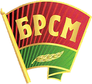
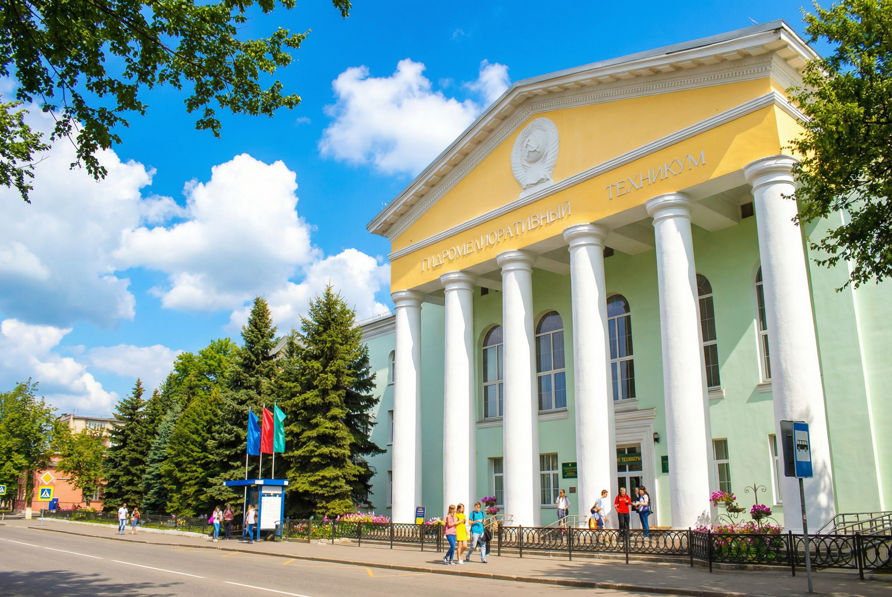
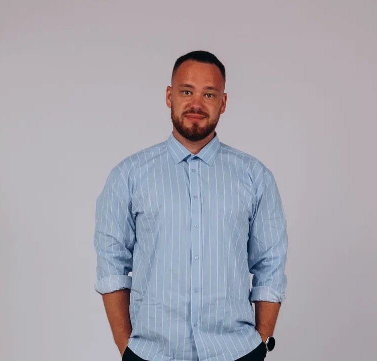
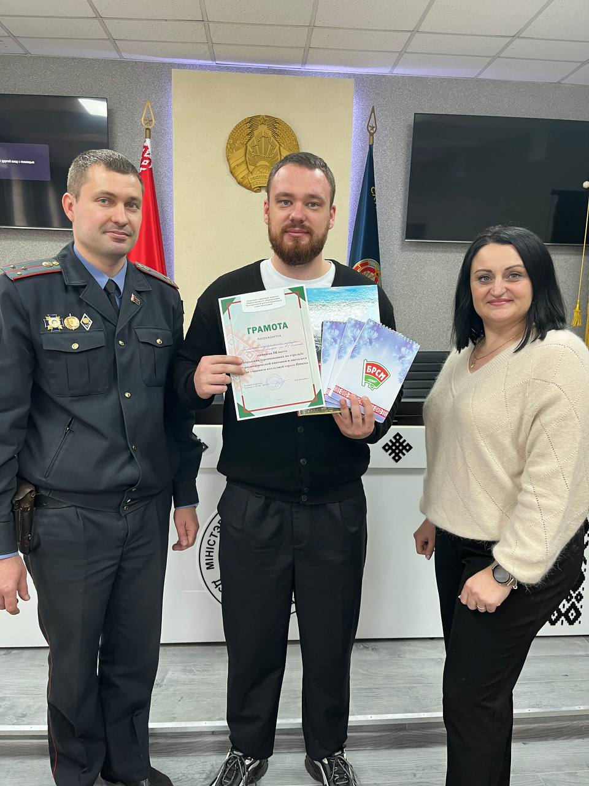
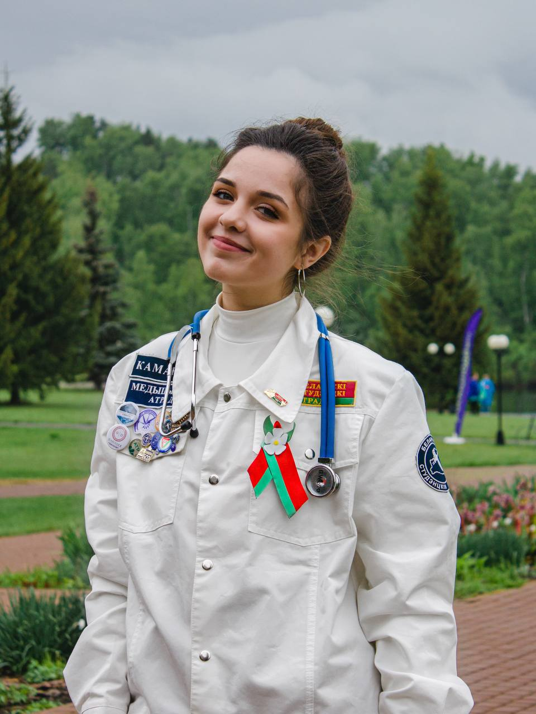
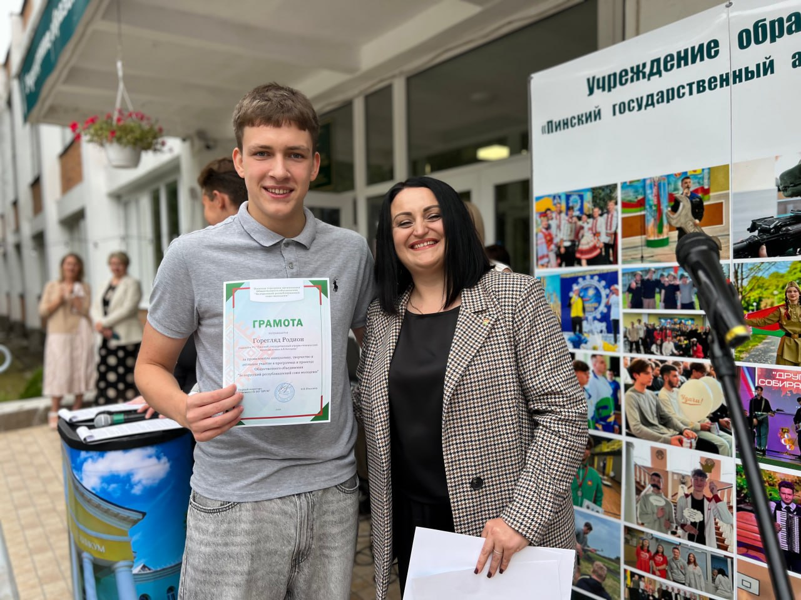
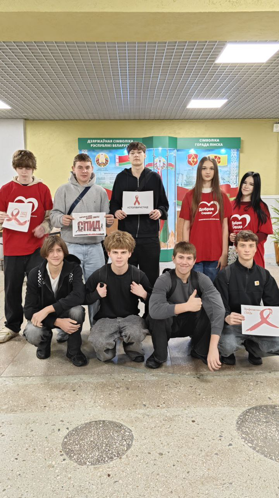
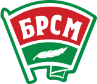
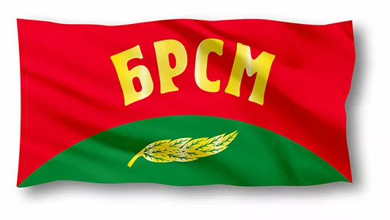

Только вместе и только вперед!
Первичная организация БРСМ Пинского аграрно-технического колледжа. Мы строим будущее своими руками здесь и сейчас.


Секретарь ПО ОО "БРСМ"
"Сегодня нашей республике нужны не просто специалисты, обладающие определенными знаниями, а заинтересованные и болеющие за свое дело молодые профессионалы, люди, которые выбрали свой путь в жизни и прилагают все усилия, чтобы принести конкретную пользу родной стране."

Меняется эпоха. Буквально на глазах стремительно меняется темп жизни, появляются новые технологии. Но остается неизменной жизненная ценность любого государства – патриотизм его граждан, который начинается с любви к своей малой родине, к тому месту, где ты родился и вырос, с гордости за свою семью, школу, деревню, поселок или город.




Представляет собой знамя цветов Государственного флага Республики Беларусь.

Красное прямоугольное полотнище с выпуклой зеленой оконечностью.
Полный текст Устава и нормативные документы доступны для скачивания
Скачать Устав ОО "БРСМ"